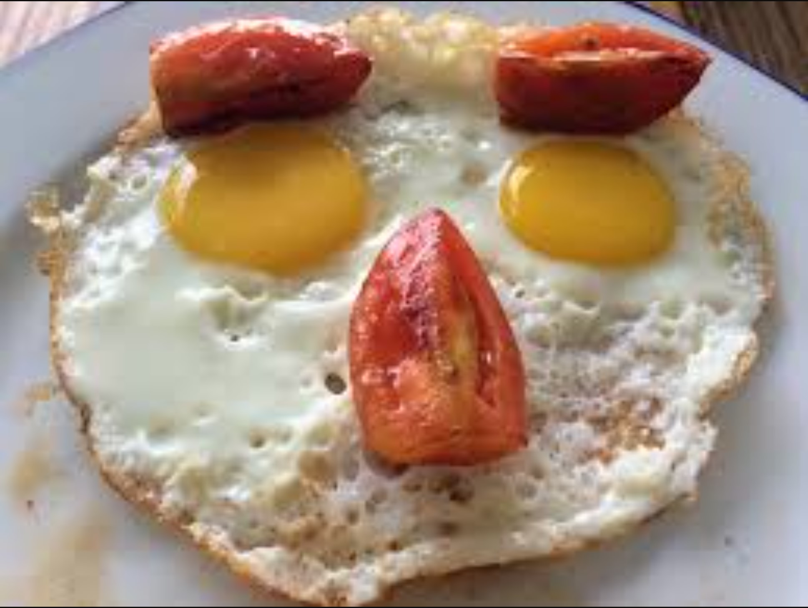

Pankake Recipe

Ingredients:
- 2 eggs
- 1 3/4 cup milk
- 1 tsp vanilla essence
- 2 cups self-raising flour
- 1/3 cup caster sugar
- Butter, for frying, plus extra, to serve
- Maple syrup, to serve
Method:
- Whisk eggs, milk and vanilla together in a jug.
Sift flour into a large bowl.
Stir in sugar.
Make a well in the centre.
Add milk mixture.
Whisk until just combined.
- Heat a large non-stick frying pan over medium heat.
Grease pan with butter or spray with cooking oil.
Using 1/4 cup mixture per pancake, cook 2 pancakes for 2 minutes or until bubbles appear on surface.
Turn and cook for a further 1-2 minutes or until cooked through.
Transfer to a plate.
Cover loosely with foil to keep warm.
Repeat with remaining mixture, greasing pan with butter or cooking oil between batches.
- Serve with maple syrup and extra butter.